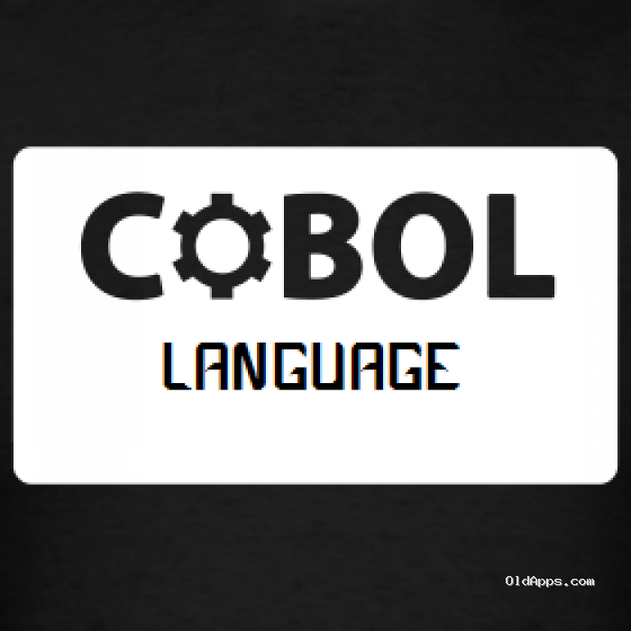
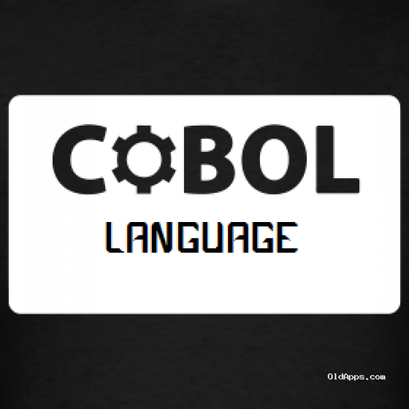
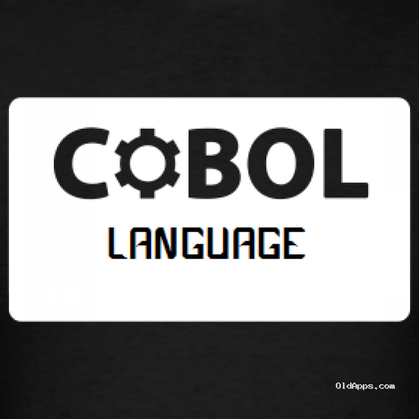

método padronizado para comunicar instruções para um computador. É um conjunto de regras sintáticas e semânticas usadas para definir um programa de computador. Permite que um programador especifique precisamente sobre quais dados um computador vai atuar, como estes dados serão armazenados ou transmitidos e quais ações devem ser tomadas sob várias circunstâncias. Linguagens de programação podem ser usadas para expressar algoritmos com precisão.
Hello World
print('Hello,World')
echo('Hello,World');
Prelude> "Hello, World"
alert("Hello,World");
#include <iostream>
using namespace std;
int main(){
cout << "Hello, World!";
return 0;
}
fun main(args:Array<String>)
println("Hello,World")
public class HelloWorld {
public static void main(String[] args) {
// Prints "Hello, World" to the terminal window.
System.out.println("Hello, World");
}
}
O computador só entende uma linguagem conhecida como código binário ou código máquina, consistente em zeros e uns. Ou seja, só utiliza 0 e 1 para codificar qualquer ação.
As linguagens mais próximas à arquitetura hardware se denominam linguagens de baixo nível e as que se encontram mais próximas aos programadores e usuários se denominam linguagens de alto nível.
BAIXO NIVEL
São linguagens totalmente dependentes da máquina, ou seja, que o programa que se realiza com este tipo de linguagem não pode ser migrado ou utilizado em outras máquinas.
Ao estar praticamente desenhado a medida do hardware, aproveitam ao máximo as características do mesmo.

ALTO NIVEL
São aquelas que se encontram mais próximas à linguagem natural que à linguagem máquina.
Estão dirigidas a solucionar problemas mediante o uso de Estrutura de Dados.Trata-se de linguagens independentes da arquitetura do computador. Sendo assim, à princípio, um programa escrito em uma linguagem de alto nível, pode ser migrado de uma máquina a outra sem nenhum tipo de problema.


 
